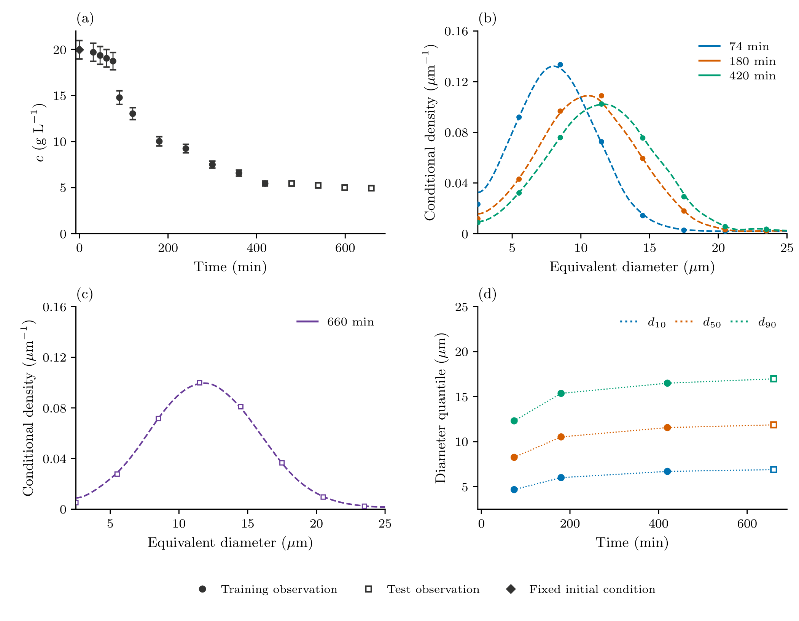
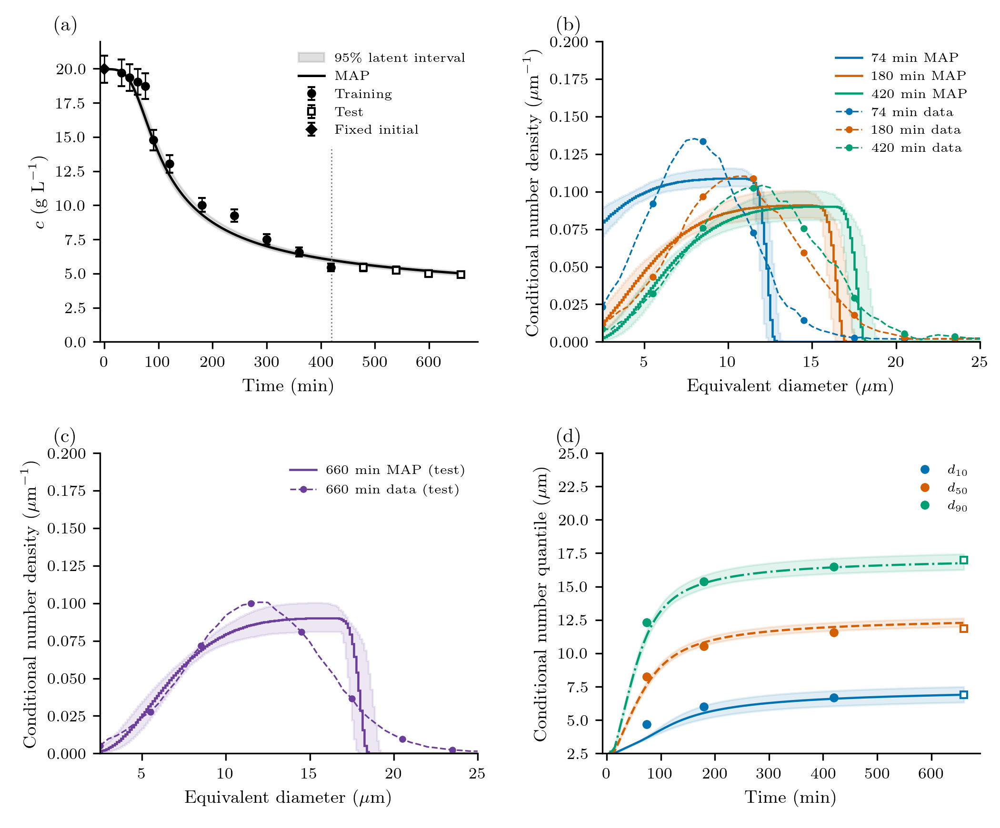
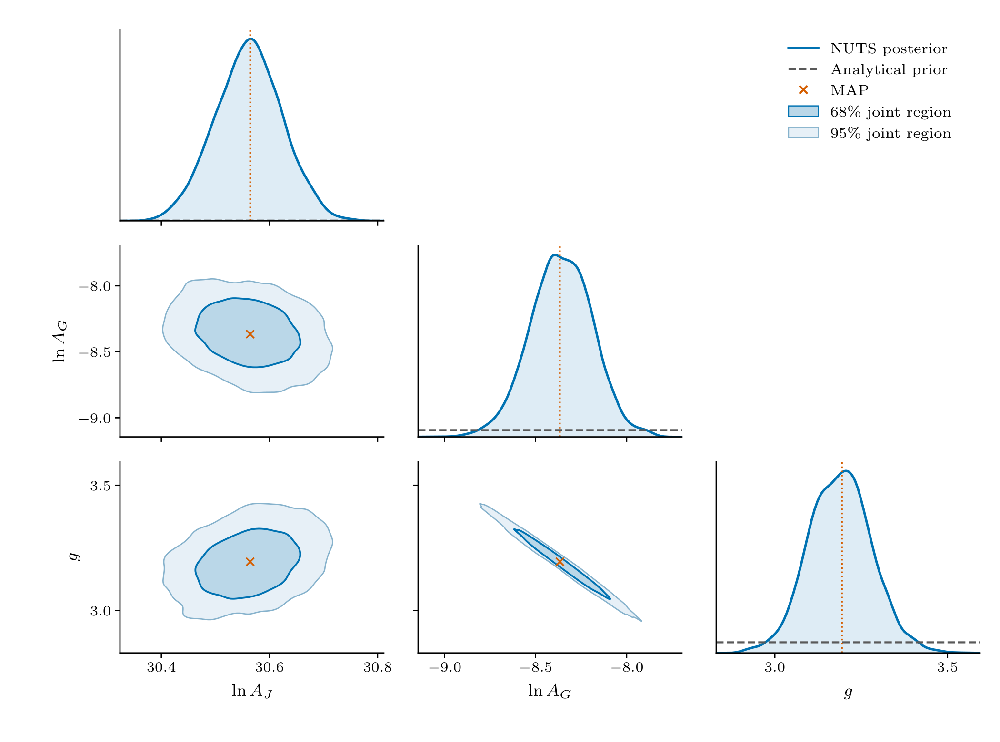
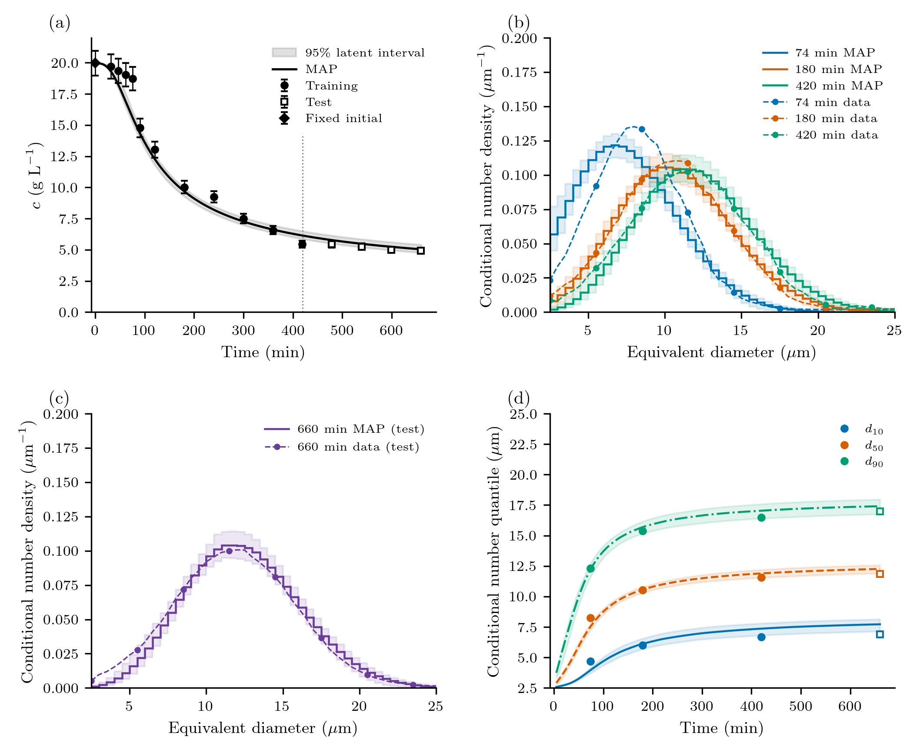
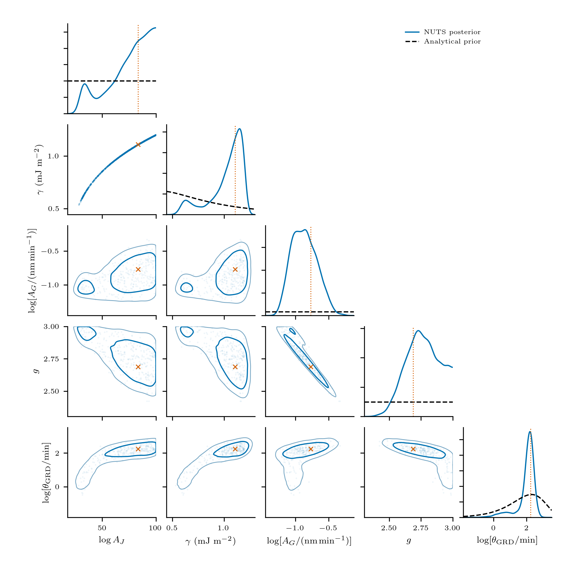

Protein crystallization: CNT and growth dispersion
Dissolved concentration measures how much protein has crystallized; a number size distribution measures how that material is divided among crystals. Here we use both to calibrate two descriptions of one isothermal lysozyme batch: CNT nucleation with a common mean growth rate, and the same model with random-fluctuation growth-rate dispersion (GRD). Later observations test their predictions. Neither model is presented as a universal kinetic law.
System and measurements
The 100 mL batch at 20 °C is from Tang et al. (2018), Figures 11(d) and 12(a). The source records describe 0.1 M sodium acetate buffer at pH 4.5, with 40 g/L protein and 10% w/w NaCl stocks. The mixed-solution salt convention and the conflicting 100/210 rpm stirring descriptions remain unresolved; we do not infer a mixing history from them.
Concentrations were measured after 0.22 μm filtration and 50-fold dilution by UV absorbance at 280 nm. Sizes are microscopy/image-analysis equivalent diameters, and these are number distributions. The separate 1 L laser-diffraction volume measurements are not used. Our supplied curves are graph reconstructions, not raw crystal counts or independent 0.5 μm measurements. The data and provenance retain the original readings and unrounded graph-read times.

Panel (a) shows concentration; its diamond fixes $c(0)\simeq19.97$ g/L. The exact graph-derived input is retained in the data file, not rounded for solving. Filled circles are the eleven training observations; open squares are the four later test observations. Panels (b) and (c) show the three training distributions at 74, 180 and 420 min and the held-out distribution at 660 min. Each density integrates to one over 2.5–25 μm, the isothermal_core window. Panel (d) shows conditional number $d_{10},d_{50},d_{90}$; dotted connections are guides only. These quantiles agree with the supplied CDFs and are not fitted again. The error bars in (a) are the assumed uncertainties below, not reported experimental standard deviations. No PSD or quantile error bars are invented.
The density readings retain small raster/marker irregularities from the source figure. Dashed curves are display guides, using a fixed 0.6 μm Gaussian bandwidth with reflection at the window ends and unit-area normalization. The symbols show unaltered graph readings. This display treatment changes neither the supplied CDFs nor the likelihood; it is not an instrument-response model.
Two population models
The batch starts unseeded, $n(L,0)=0$. Let $n$ be number density per litre of suspension per micrometre, $L$ equivalent diameter in μm, $t$ time in minutes and $c$ dissolved concentration in g/L. Both models use the CNT nucleation and size-independent growth forms of Mitchell et al. (2023), Case 3:
\[S=\frac{c}{c_*},\qquad J(c)=A_J\exp\!\left[-\frac{B}{(\ln S)^2}\right],\qquad G(c)=A_G(S-1)^g,\]
\[B=\frac{16\pi\gamma_{\rm SI}^{3}\nu^2}{3(k_{\rm B}T)^3},\qquad \gamma_{\rm SI}=0.00064\ {\rm J\,m^{-2}}.\]
Set J and G to zero for S ≤ 1. There is no extra S prefactor in J. $A_J$ is in particles/(L min), $A_G$ in μm/min and $B$ is dimensionless. These are the same kinetic forms with consistent units, rather than the earlier mixture of seconds/minutes and nanometres/micrometres. In particular, $A_{J,{\rm new}}=0.06 A_{J,{\rm old}}$ and $A_{G,{\rm new}}=10^{-3}A_{G,{\rm old}}$. Unit conversions belong to the parameter definitions, not extra factors in these equations.
We fix interfacial energy at 0.64 mJ/m², the median of the preceding Mitchell-based LogNormal prior. This is a conditional modelling choice that removes the nucleation-prefactor/ barrier compensation direction, not evidence that interfacial energy has been measured precisely. Three parameters are inferred for CNT; four for CNT + GRD. The common kinetic priors are the previous priors expressed in the new units, except that g now has the explicitly wider Uniform(1,5) prior.
| Parameter | Meaning and units | Prior | Model |
|---|---|---|---|
| $\gamma$ | Effective interfacial energy (mJ/m²) | 0.64 (fixed) | Both |
| $\ln A_J$ | Natural log of the numerical nucleation prefactor in particles/(L min) (dimensionless) | Uniform(-2.8134, 97.187) | Both |
| $A_G$ | Mean-growth prefactor (μm/min) | log-uniform AG on [1e-05, 1.5] | Both |
| $g$ | Supersaturation growth exponent (dimensionless) | Uniform(1, 5) | Both |
| $D_0$ | Constant internal-coordinate diffusivity D0 (μm²/min) | Exponential(scale/mean 0.01 μm²/min) | CNT + GRD only |
Model 2's constant $D_0$ has an Exponential prior with mean 0.01 μm²/min. This is a declared regularizing assumption: its mean would give diffusion-only standard-deviation growth $\sqrt{2D_0t}\approx3.6$ μm over 660 min on an unbounded coordinate. The numerical mean was chosen heuristically, not taken from Tang or Mitchell or estimated independently. It is not a measured coefficient or a converted prior on the old growth-dependent dispersion parameter. The two GRD laws are different models, so their parameters and posterior draws cannot be interchanged.
Fixed values are T = 293.15 K, c(0) ≈ 19.97 g/L, c* = 2.16 g/L, $\rho=1.24\times10^{-12}$ g/μm³ (= 1240 kg/m³), $k_v=0.81$, $\nu=2.97\times10^{-26}$ m³/molecule and $k_{\rm B}=1.380649\times10^{-23}$ J/K. Solubility, density, shape and the identity diameter-to-length mapping remain conditional assumptions.
CNT evolves
\[\frac{\partial n(L,t)}{\partial t} +\frac{\partial[G(c(t))n(L,t)]}{\partial L}=0.\]
CNT + GRD uses a constant internal-coordinate diffusivity:
\[\frac{\partial n(L,t)}{\partial t} +\frac{\partial[G(c(t))n(L,t)]}{\partial L} =D_0\frac{\partial^2 n(L,t)}{\partial L^2},\qquad D_0\ge0.\]
This is the package's Ito random-fluctuation closure, with independent temporal fluctuations between particles. It does not assign permanent fast/slow growth classes. Constant D0 continues to act when G vanishes; this finite-horizon model is not a thermodynamic equilibrium model. Improved agreement alone would not identify the microscopic origin of GRD.
The total left number flux is J, where $F=Gn$ for CNT and $F=Gn-D_0\,\partial n/\partial L$ for CNT + GRD. BoundaryInjection supplies it once; no separate condition n(0)=J/G is imposed. The base size boundaries are closed, with a remote upper edge checked by occupancy and domain extension. See the diffusion contract.
Assemble and calibrate the batch
The short example uses the same model builder and likelihood as the reproduction driver. grd_strength is retained as the Julia keyword; it now means D0 in μm²/min.
using PopulationBalanceModels, Optim
include("examples/isothermal_protein_crystallization.jl")
const I = IsothermalProteinCrystallization
p = I.parameters(grd_strength=0.01)
problem = I.build(p=p,model=:cnt_grd,bins=200)
solution = I.forward(p;model=:cnt_grd,bins=200)
estimation = I.estimation_problem(model=:cnt_grd,bins=200)
fitted = I.fit_model(estimation) # three calibration-only starts
fitted.converged || error("Inspect the MAP diagnostics")
physical_parameters(estimation,fitted.minimizer,:batch)Inside build, the physical terms are ordinary package components:
terms = (
growth=Growth(PolynomialRate(((p,t,ctx)->I.growth_rate(p,ctx.bulk.c),))),
primary=Nucleation((p,t,ctx)->I.nucleation_rate(p,ctx.bulk.c),0.0),
dispersion=SizeDiffusion(PolynomialRate(((p,t,ctx)->p.grd_strength,))),
)
methods = TermMethods(growth=MUSCL(),by_term=(primary=BoundaryInjection(:left),))A PBMSystem couples this population to concentration. Bin states are physical particle concentrations $N_i=\int_{L_{i-1/2}}^{L_{i+1/2}}n\,dL$, in particles/L. With $L_i$ the bin centre, the same RK-stage derivative supplies the complete exchange:
\[\frac{dc}{dt}=-\rho k_v\sum_i L_i^3\frac{dN_i}{dt},\qquad c+\rho k_v\sum_i L_i^3N_i=c(0).\]
Thus diffusion's material contribution is included automatically, without adding a second analytical sink. Away from the upper boundary the continuum check is $dM_3/dt=3GM_2+6D_0M_1$. Discrete conservation is exact up to integration/ roundoff; agreement with that continuum rate is a separate refinement check. Boundary births are deposited into the first finite bin, whose small represented material is included in the same balance.
Observations and fixed errors
The initial concentration fixes c(0) and is excluded from fitting. Eleven later concentrations and the 74-, 180- and 420-min conditional number CDFs calibrate the model. Four later concentrations and the 660-min distribution are held out. The original, unrounded observation times and 2.5–25 μm window are unchanged.
Concentration SD is 5% of each observed value, computed once. Each training CDF supplies 22 interior ordinates with covariance
\[\Sigma_{ij}=0.03^2\exp[-|L_i-L_j|/(2\ \mu{\rm m})].\]
The normalization endpoints are excluded. Linear whitening retains the known determinant constant; full Gaussian normalizers are reported. These error scales and the correlation length are modelling assumptions, not experimental uncertainties learned from these readings. No noise parameter is fitted. Conditional d10/d50/d90 come from those same CDFs and are not independent likelihood data. Conditional distributions constrain shape within the window; they do not independently measure absolute particle count.
MAP is optimized in z = (logit(logAJ), log AG, logit g), with log D0 added only for GRD. Physical-prior Jacobians are included once; a transformed MAP is not generally the physical-density mode. Both models use the same training data, likelihood and common priors. Held-out agreement does not select a start or prior.
NUTS uses four chains and the package's diagnostic stopping policy. A unit-determinant growth-rate shear improves tuning; it does not add a reference rate parameter. Expected Gaussian information initializes sampler tuning; it is not reported as a Laplace covariance. Sampling must pass rank Rhat ≤ 1.01, bulk/tail ESS ≥ 400, BFMI ≥ 0.3 and zero retained divergences/depth hits. Two consecutive eligible checkpoints are required. All figures below use new draws for this target. Failed trial solves are counted and rejected; they are distinct from sampler divergences and do not become posterior predictions. The former four-/five-parameter, growth-dependent-GRD results are archived.
CNT: fit and prediction

Panels follow the data overview. Solid curves are the MAP; bands are pointwise 95% latent intervals propagated from verified NUTS draws. They describe parameter uncertainty conditional on this model and its fixed assumptions, not new measurement noise. The later concentration points and the 660-min PSD are frozen predictions. Model density curves connect computed bin averages; they are not smoothed or assigned additional spatial resolution.

Diagonals compare normalized posterior densities with dashed analytical priors. Logarithmic plotting coordinates use numerical AJ in particles/(L min), AG in μm/min and D0 in μm²/min. The fixed γ is absent. In each two-parameter marginal, contours enclose approximately 68% and 95% probability. Markers denote the transformed inference-coordinate MAP. Broad priors are not renormalized to the displayed crop.
CNT with constant GRD: fit and prediction

The observation conventions and axes are identical to CNT. The fourth panel shows conditional population-size quantiles, not parameter credible-interval endpoints. At times when the observation window is empty, predicted quantiles are omitted rather than defined using a numerical floor. Constant dispersion improves the middle-time distributions, but the 74-min peak remains too flat and the 660-min prediction is broader than the readings. These systematic shape differences remain visible alongside the concentration fit and should qualify the interpretation of the kinetic estimates.

Estimates and interpretation
| Parameter (units) | CNT MAP | CNT median [95% interval] | CNT + GRD MAP | CNT + GRD median [95% interval] |
|---|---|---|---|---|
| $\gamma$ (mJ/m²) | 0.64 (fixed) | — | 0.64 (fixed) | — |
| $\ln A_J$ (dimensionless) | 30.56 | 30.56 [30.44, 30.68] | 30.48 | 30.49 [30.36, 30.62] |
| $A_G$ (μm/min) | 0.0002326 | 0.0002347 [0.0001674, 0.000323] | 0.0001605 | 0.000159 [9.721e-05, 0.0002393] |
| $g$ (dimensionless) | 3.195 | 3.191 [3.015, 3.373] | 3.371 | 3.378 [3.165, 3.637] |
| $D_0$ (μm²/min) | 0 (fixed) | — | 0.01157 | 0.01118 [0.005655, 0.01877] |
Values are MAP, posterior median and equal-tailed 95% intervals. The fixed interfacial energy and CNT's fixed D0 have no posterior interval.
| Model | Training concentration RMSE (g/L) | Test concentration RMSE (g/L) | Max Rhat | Min bulk/tail ESS |
|---|---|---|---|---|
| cnt | 1.14 | 0.551 | 1.0021 | 1457/1452 |
| cnt_grd | 1.04 | 0.28 | 1.0023 | 1706/1502 |
| Model | PSD time (min) | Use | CDF RMSE (fraction) | W2 (µm) | d10 error (µm) | d50 error (µm) | d90 error (µm) |
|---|---|---|---|---|---|---|---|
| cnt | 74 | calibration | 0.0447 | 1.412 | -0.794 | -0.428 | -0.965 |
| cnt | 180 | calibration | 0.0265 | 0.932 | 0.101 | 0.376 | -0.557 |
| cnt | 420 | calibration | 0.0299 | 0.943 | 0.479 | 0.438 | -0.584 |
| cnt | 660 | validation | 0.0327 | 0.955 | 0.586 | 0.443 | -0.758 |
| cnt_grd | 74 | calibration | 0.0413 | 1.185 | -0.833 | -0.465 | -0.701 |
| cnt_grd | 180 | calibration | 0.0156 | 0.483 | -0.309 | 0.228 | 0.030 |
| cnt_grd | 420 | calibration | 0.0226 | 0.472 | -0.628 | 0.116 | 0.706 |
| cnt_grd | 660 | validation | 0.0326 | 0.716 | -1.048 | 0.003 | 1.099 |
Concentration constrains transferred material while conditional PSDs constrain its distribution across sizes. Over a limited supersaturation range, $\ln G=\ln A_G+g\ln(S-1)$ still permits coefficient–exponent compensation. The GRD draws retain a correlation of about −0.99 between $\ln A_G$ and g; the smaller prefactor is compensated by a larger supersaturation exponent. Fixing γ removes one compensation direction without adding experimental information. Correlations and passed chain checks do not establish structural identifiability, numerical convergence or physical adequacy. Residuals and held-out errors remain visible; no model evidence or Bayes factor is inferred from MAP posterior values in different dimensions. Model 2's continuous positive prior also means that a positive equal-tailed interval for D0 alone is not evidence for selecting it over the fixed-D0=0 model.
Numerical checks and reproduction
Both models use MUSCL growth and native SSPRK33. GRD uses native SizeDiffusion/FiniteVolumeDiffusion; no custom diffusion residual is involved. The current-stage combined growth/diffusion recommendation bounds the explicit step on each coefficient interval. It is a recommendation with stage checks, not automatic adaptivity. Upward rate buckets keep the step schedule locally constant for ForwardDiff; derivatives across a change of bucket are not claimed. Nonnegative populations/bulk states, upper occupancy, material balance and time/size/domain refinement are checked at the MAP and representative posterior draws. No negative state is clipped.
| Model | Size bins | Steps (displayed MAP trajectory) | Max CDF change: time / size / domain | Max material error (g/L) |
|---|---|---|---|---|
| cnt | 400 | 832 | 5.5e-06 / 0.0048 / 0 | 1e-12 |
| cnt_grd | 200 | 1368 | 1.4e-07 / 0.0013 / 0 | 2.6e-12 |
The refinements above hold parameters fixed. A separate calibration-only refit on twice as many bins gives:
| Model | Max calibration CDF change after refit | Max concentration change (g/L) |
|---|---|---|
| cnt | 0.0115 | 0.11 |
| cnt_grd | 0.000732 | 0.00258 |
The interval estimates condition on the primary mesh. In particular, CNT's 800-bin calibration-only refit shifts predictions more than its fixed-parameter grid comparison. The table retains this difference; the MCMC bands do not include discretization or model error.
From the checkout root:
julia --project=paper -e 'using Pkg; Pkg.develop(path=pwd()); Pkg.instantiate()'
python -m pip install -r paper/requirements.txt
julia --project=paper paper/protein/run.jl --smoke
julia --project=paper paper/protein/run.jl --full --output=/tmp/protein-constant-D0
python paper/protein/plot.py --tables --input=/tmp/protein-constant-D0
# Retained active results: no fits, sampling or forward solves.
python paper/protein/plot.py --tables
python test/protein_results.pyUse --model=cnt or --model=cnt_grd to run one model, --map for calibration without sampling, and --verify to check active posterior densities and gradients. Explicit --samples=N selects fixed-length sampling; --min-samples=, --batch-samples=, --max-samples= and --consecutive-passes= control diagnostic stopping. New output directories protect existing samples. The main model and likelihood are in the downloadable example; the paper driver adds reporting, figures and saved provenance. Plotting the data alone needs no fit: python paper/protein/plot.py --data-only.
Complete script
Run from the repository root in an environment with Optim and the checkout developed into it, such as julia --project=docs. This fits CNT using calibration data only, freezes its parameters, then predicts the later observations. Set model = :cnt_grd to fit the constant-diffusion extension instead. The fit can take several minutes; this script performs neither MCMC nor file exports.
using PopulationBalanceModels, Optim
include("examples/isothermal_protein_crystallization.jl")
recipe = IsothermalProteinCrystallization
model = :cnt
data = recipe.load_data()
estimation = recipe.estimation_problem(; data, model, bins=200)
fitted = recipe.fit_model(estimation)
fitted.converged || error("MAP did not converge; inspect the fit diagnostics")
theta = physical_parameters(estimation, fitted.minimizer, :batch)
# Predictions use frozen calibration parameters, including at held-out times.
p = merge(recipe.parameters(), theta)
solution = recipe.forward(p; model, bins=200,
times=[0.0, 74.0, 180.0, 420.0, 660.0])
problem = solution.problem
concentration = [bulk(problem, u, :c) for u in solution.u]
crystals = population(problem, last(solution.u), :crystals)
@show theta concentration